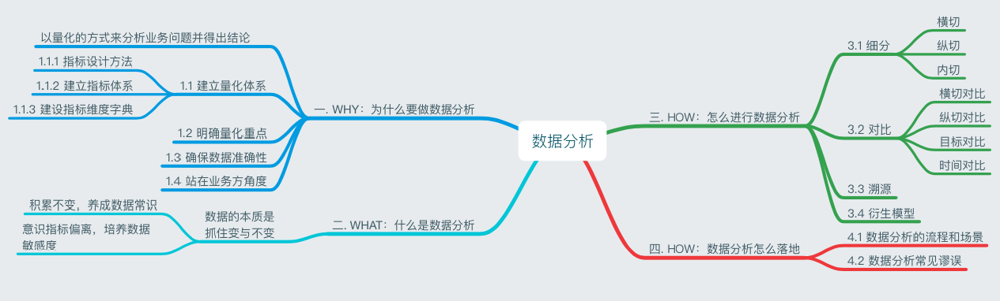
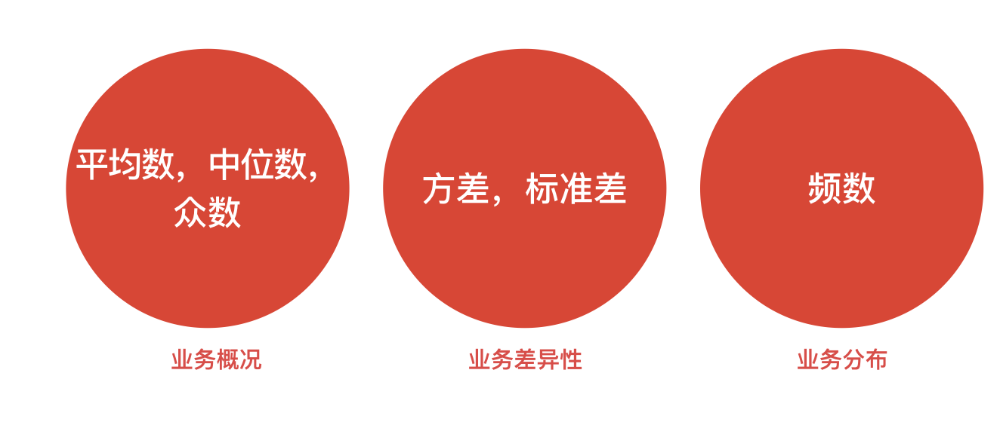
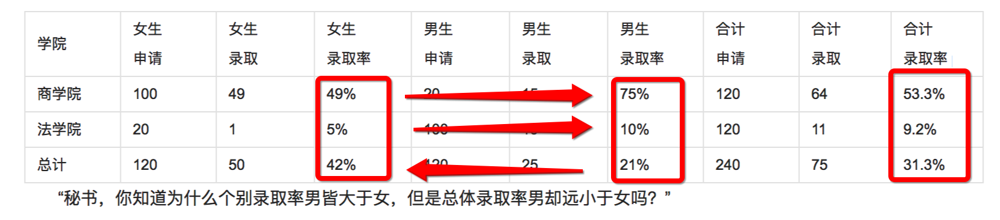

目录
1.背景介绍
2.知识剖析
3.参考文献
4.更多讨论
作为产品经理，大家意见相左时，怎么和老板讲道理？怎么和程序员撕？说数据相对是最能让人信服的方法。所以需要了解一些数据分析。
比较概括的说：
1.战略决策
2.投资决策
3.营销决策
4.产品决策
（1）催发数据性思维
数据性思维表现在：
1.对全部数据进行分析，而不是随机抽样；
2.并不过于追求精确性，而是重视数据的复杂性；
3.更多挖掘数据的相关性，而不是因果
4.数据之间的关联关系。
（2）产出“数据资产”
数据不断的累计和整合，使得数据变成无形资产，使数据逐步帮助企业做决策，帮助产品设计导方向，改变运营策略。
（3）数据资产可以变现
数据可以像商品一样可以进行售卖，数据变现使得数据有了价值，然而，不同数据，不同数据质量也具有不同价值，但数据的价值却是客官存在的。
数据分析，永远都是为了产品发展而服务。

数据分析是为了能以量化的方式来分析业务问题并得出结论。
量化是为了统一认知，并且确保路径可回溯，可复制。
统一认知后，才能保证不同层级，不同部门的人在平等话语权和同一个方向进行讨论和协作，才能避免公司内的人以「我感觉」「我猜测」来猜测当前业务的情况。
路径可回溯可复制指的是：通过量化后的结果，许多优化的方法是可以被找到原因并且可以被复制的。同样是转化率优化，用 A 方案和 B 方案，谁的效果会比较好和具体好多少，都是可被预测的。
要想做到量化，需要做到三点：建立量化体系，明确量化重点和保证数据准确性。
1 建立量化体系
建立量化体系，主要是根据「指标设计方法」，设计业务的「核心指标+拆解指标+业务指标」，最后落地成全公司通用的「指标字典」和「维度字典」。
这种工作一般是由数据分析师或数据 PM 来担任完成。通过这种方式，我们就能初步建立面向全公司全面，系统的量化分析框架，保证日常分析可以做到「逐层拆解，不重不漏」。
1.1 指标设计方法
指标设计是一套以准确和易懂为准则，集合统计学和业务效果的方法论。
准确是指能够准确满足衡量目的，易懂是指标算法能直观显示好与坏，并且指标的算法也能够通俗易懂。这两者很多时候需要有所抉择，准确是第一位的。
具体到指标设计，我们需要使用一些常用的统计学工具：

以顾客质量分析为例：概况是我们看下顾客的平均支付金额，或者支付中位数，来了解顾客概况。如果我们想了解这批顾客的质量是都比较好，还是良莠不齐，则需要通过方差和标准差来描述。如果想知道更详细的内容，可以了解每个区间的用户数是多少，来做判断。
一些 Tips
1.比率指标：关注实际效果（下单转化率，光看下单数是没有用的）
2.伴生指标：既要看新客数也要看 CAC，确保数量的前提也要确保质量
3.防止坏指标：错误指标，虚荣指标，复杂指标
每个 Tips 的目标
之所以采取比率指标和伴生指标，是因为能够明显反映业务的「效率」且能够有效防止因为追求单个指标而导致动作变形。
如果说这辆车能跑十万公里，其实并不能表示这辆车的性能怎么样；只有「速率=路程/时间」，才能反映这辆车的效率。
同时，如果片面追求速率，会导致汽车在设计时剑走偏锋，给驾驶者带来危险；因此需要再加个「故障率」或「事故率」等伴生指标来确保安全。
「虚荣指标」:「把距离业务目标过远的环节定义为核心监控指标」
对于一个即时通讯 APP 来讲，下载次数、启动用户数、注册用户数需要监控，但不能作为核心监控的指标；更合适的应该是消息数或「进行过对话的用户数」。
1.2 建立指标体系
核心是根据业务特征确定核心指标，在核心指标的基础上以不同的角度进行拆解，然后再慢慢补充其他业务的指标情况
2 明确量化重点
每个阶段，都应该明确当前的业务重点；量化体系需要根据业务阶段，更改量化重点及方式。
这同时意味着：有更细节的指标及更大的监控和推广力度。
比如外卖行业早期，经历了看重订单数，到订单额，到新客数+补贴率，到新客数+资金使用效率（交易完成进度/费用完成进度）的历程。
3 确保数据准确性
采取可信来源：多来源交叉确认，采用新来源时需格外小心
确认加工方式：指标定义和加工算法
Double Check：量级，计算逻辑和业务常识
Double Check 的技巧
量级 Check：每个数据有它的大概范围，比如 DAU，WAU 和 MAU
计算逻辑 Check：一般对于整体部分型的分数，比如市场份额，那么它必须满足：1，取值最大不能超过1；2，各部分加和应为1；3，两数字加和后，和应该在中间范围内。
4 站在业务方的角度
除了「量化」之外，另外一个重点词语是「业务」
只有解决业务问题分析才能创造价值
总结起来就是八个字「忧其所虑，给其所欲」
具体的落地过程中，主要是在这以下几个环节
沟通充分
结论简明
提供信息量及可落地建议
寻求反馈
在沟通上，确定业务方想要分析什么，提出更合理专业的衡量和分析方式，同时做好节点同步，切忌一条路走到黑。
在阐述分析结果上，要记得结论先行，逐层讲解，再提供论据。论据上，图 > 表 > 文字。
在「提供信息量及可落地建议」上，先要明白什么叫信息量：提供了对方不知道的信息。
数据分析的本质是抓住「变」与「不变」
若想抓住「变」，得先形成「不变」的意识。
积累「不变」，就是养成「数据常识（Data Common Sense）」的过程。
「不变」是根据对历史数据不断的观察和积累而来。一般来说会是个范围，范围越精准，你对「变」就越敏感。
这里有三个个人的习惯，可以帮助养成「不变」：
形成习惯，每天上班第一时间查看数据：实时&日周月报
记住各个指标大数，反复推算
记录关键数据（榜单&报告）
简单记住大数，万以下只需要记到万位，有些数字只需要记住百分比
记录关键数据是将工作生活遇到的比较有趣的榜单或数据报告保存在一个统一的地方，方便查阅和分析。
在「不变」的基础上，便能逐渐培养出指标敏感性，即意识指标偏离的能力。这主要是通过各种日环比，周月同比的监控以及日常的好奇心来保持。
比如看到一张app的排行榜
看整体排行：看哪些 APP 排在前方是出乎你意料之外的
分行业看排行：看行业里排行及其变动
看增长率：哪些 APP 增长比较快
看使用时长等其他指标
抛出问题：
qq整体的月活跃用户下降，但是手机qq的活跃用户增加？意味着什么
任何数据分析都是「细分，对比，溯源」这三种行为的不断交叉。
3.1 细分
在细分方式上，主要有以下三种方式
横切：根据某个维度对指标进行切分及交叉分析
纵切：以时间变化为轴，切分指标上下游
内切：根据某个模型从目标内部进行划分
3.2 对比
对比主要分为以下几种：
横切对比：根据细分中的横切维度进行对比，如城市和品类
纵切对比：与细分中的纵切维护进行对比
目标对比：常见于目标管理，如完成率等
时间对比：日环比，周月同比；7天滑动平均值对比，7天内极值对比
3.3 溯源
经过反复的细分对比后，基本可以确认问题所在了。这时候就需要和业务方确认是否因为某些业务动作导致的数据异常，包括新版本上线，或者活动策略优化等等。
如果仍然没有头绪，那么只能从最细颗粒度查起了，如
户日志分析
用户访谈
外在环境了解，如外部活动，政策经济条件变化等等
3.4 衍生模型
Why-How-What
5W1H
5Why
4P模型（产品，价格，渠道，宣传）
SWOT 模型（优势，劣势，机会，威胁）
PEST 模型（政治，经济，社会，科技）
波士顿矩阵
控制变量谬误：在做 A/B 测试时没有控制好变量，导致测试结果不能反映实验结果。或者在进行数据对比时，两个指标没有可比性。
样本谬误：在做抽样分析时，选取的样本不够随机或不够有代表性。举例来讲，互联网圈的人会发现身边的人几乎不用「今日头条」，为什么这 APP 还能有这么大浏览量？有个类似的概念，叫 幸存者偏差。
定义谬误：在看某些报告或者公开数据时，经常会有人鱼目混珠。「网站访问量过亿」，是指的访问用户数还是访问页面数？
比率谬误：比率型或比例型的指标出现的谬误以至于可以单独拎出来将。一个是每次谈论此类型指标时，都需要明确分子和分母是什么。另一方面，在讨论变化的百分比时，需要注意到基数是多少。有些人即使工资只涨 10% ，那也可能是 150万…
因果相关谬误：会误把相关当因果，忽略中介变量。比如，有人发现雪糕的销量和河溪溺死的儿童数量呈明显相关，就下令削减雪糕销量。其实可能只是因为这两者都是发生在天气炎热的夏天。天气炎热，购买雪糕的人就越多，而去河里游泳的人也显著增多。
辛普森悖论：简单来说，就是在两个相差较多的分组数据相加时，在分组比较中都占优势的一方，会在总评中反而是失势的一方。

前面所述的数据变化的问题
感谢大家观看